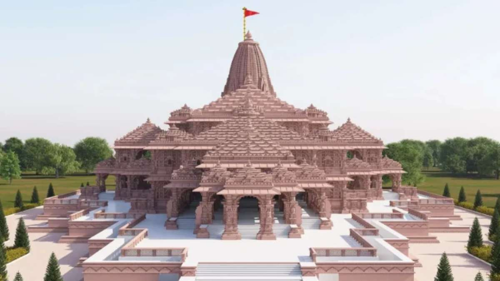

in January 2022, the Ram Janmabhoomi-Babri Masjid dispute in Ayodhya, India, had seen significant developments. The dispute was centered around a religious site in Ayodhya, where Hindus believe Lord Ram was born. The Babri Masjid, a mosque built in the 16th century, stood on the same site. In 1992, the Babri Masjid was demolished by a group of activists, leading to widespread communal tensions and legal battles. The dispute resulted in a long-standing legal and political struggle over the ownership and control of the land. The case went through various stages in the Indian legal system.  In 2019, the Supreme Court of India delivered a landmark judgment in the Ayodhya dispute. The court granted the entire disputed land to the Hindus for the construction of a Ram temple. It also ordered the allocation of an alternative 5-acre plot to the Sunni Waqf Board for the construction of a mosque. After the court's verdict, the construction of the Ram temple began in Ayodhya. The temple is expected to be a significant religious and cultural symbol for the Hindu community in India. It's important to note that developments may have occurred after my last knowledge update in January 2022. I recommend checking more recent sources for the latest information on the Ayodhya Ram Mandir.
TO WATCH THE LIVE CLICK HERE